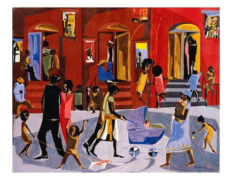

Welcome to my website!
Welcome to the website of famous artists create and build pieces of archetecture, paintings, and photography that help build communities and understanding in many types of arts. This website will show you many arctects and artists who are from Japan, England, the USA, and many other countires.
In this site, we explore what knid of arts famous artists contribute, and why they create these maginificent masterpieces. They will tell us what thier work means to them, why its important, and why did they create it.
Featured Artists:
Isabelle Allende

In this site, we explore what knid of arts famous artists contribute, and why they create these maginificent masterpieces. Get to know her work...
Jacob lawrence
In this site, we explore what knid of arts famous artists contribute, and why they create these maginificent masterpieces. Get to know his work...